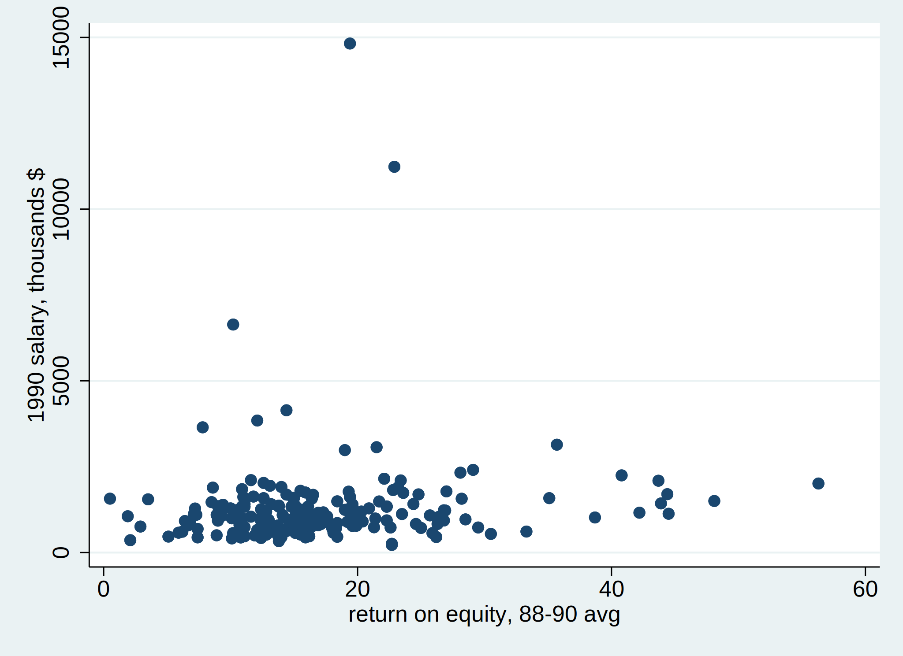
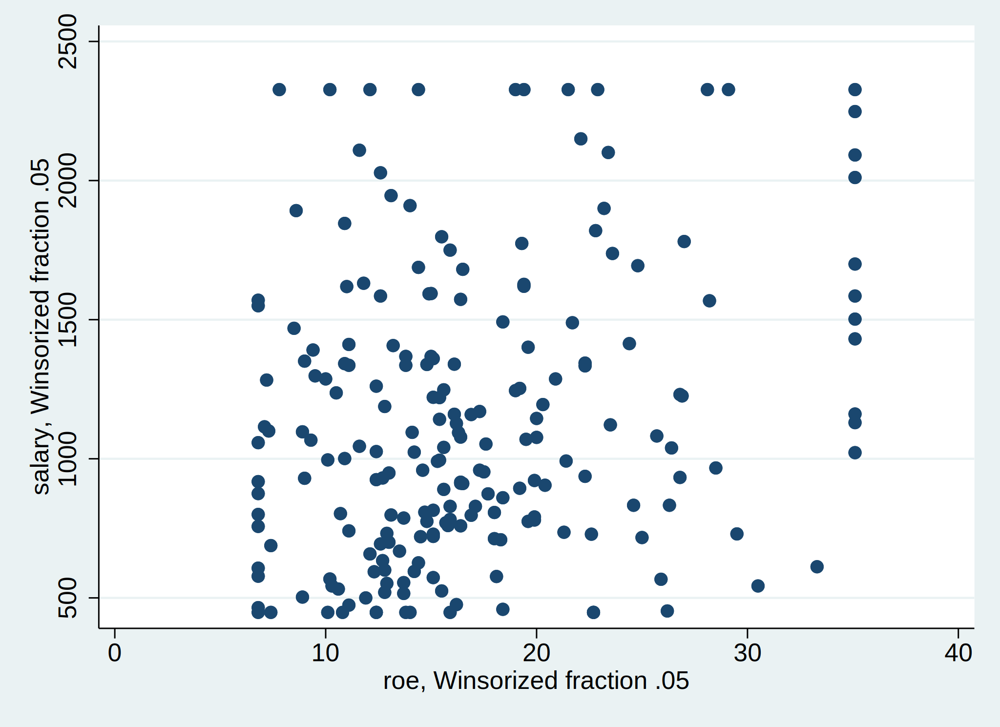
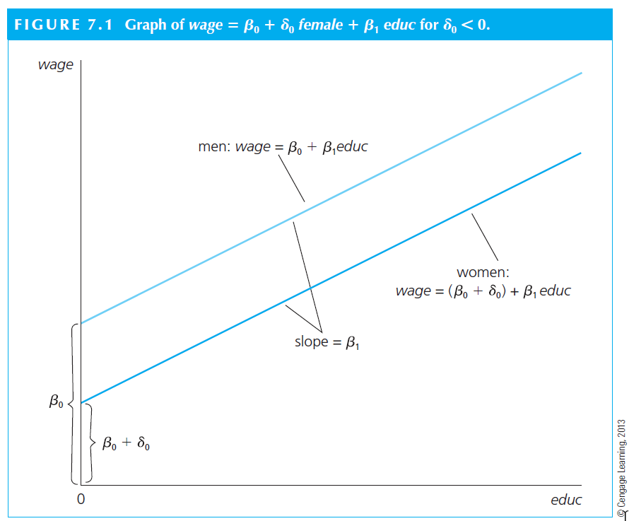
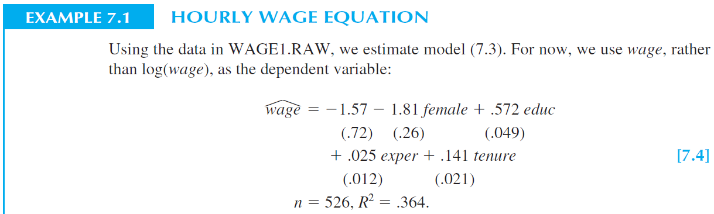
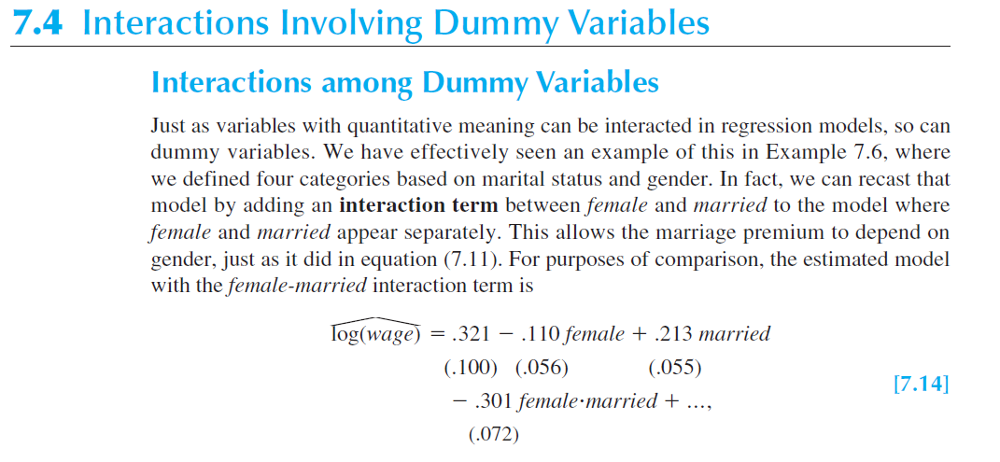
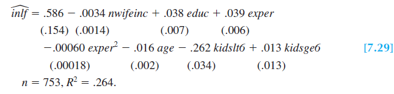
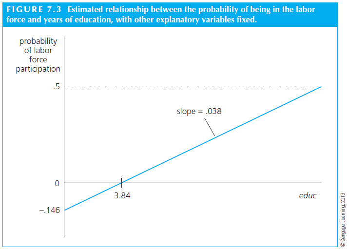

Multivariable models
Multivariable models
It is quite uncommon that you will have a model with only one independent variable.
The most frequent type of model in research is multivariate.
\[y_i = \alpha + \beta_1 x_1 + \beta_2 x_2 + \beta_3 x_3 + . . . + \beta_k x_k+ \mu\]
. . .
The estimation of \(\alpha\) refers to the predicted value of Y when all X’s are zero (it might not make much sense if the variables cannot assume the value of zero).
Multivariable models
Usually, we think of \(\beta_k\) as having partial effects interpretations.
Meaning that we think \(\beta\) as the change in Y (\(\Delta y\) ) given a change in x (\(\Delta x_1\) ), ceteribus paribus
i.e., holding all other changes as zero (\(\Delta x_2 = \Delta x_3 = . . . = \Delta x_k = 0\) )
Thus, the “effect” or the “association” is \(\beta_1\) , holding all else constant.
. . .
We can predict the value of \(y\) just like before.
\[\hat{y_i} = \hat{\alpha} + \hat{\beta_1} x_1 + \hat{\beta_2} x_2 + \hat{\beta_3} x_3 + . . . + \hat{\beta_k} x_k \]
Multivariable models
Like before, we will need some assumptions.
\[E(\mu | x_1,x_2, ... , x_k) = 0\]
Implying no correlation between \(\mu\) and the X’s.
Multivariable models
R
library (sandwich)library (foreign) library (stargazer)<- read.dta ("files/CEOSAL1.DTA" )<- lm (salary ~ roe , data = data)<- lm (salary ~ roe + lsales, data = data)stargazer (model1, model2 ,title = "Regression Results" , type = "text" )
Regression Results
===============================================================
Dependent variable:
-------------------------------------------
salary
(1) (2)
---------------------------------------------------------------
roe 18.501* 22.674**
(11.123) (10.982)
lsales 286.265***
(92.332)
Constant 963.191*** -1,482.294*
(213.240) (815.971)
---------------------------------------------------------------
Observations 209 209
R2 0.013 0.057
Adjusted R2 0.008 0.048
Residual Std. Error 1,366.555 (df = 207) 1,338.984 (df = 206)
F Statistic 2.767* (df = 1; 207) 6.247*** (df = 2; 206)
===============================================================
Note: *p<0.1; **p<0.05; ***p<0.01
Python
import pandas as pdimport statsmodels.api as smimport statsmodels.formula.api as smffrom statsmodels.iolib.summary2 import summary_col= pd.read_stata("files/CEOSAL1.DTA" )= sm.OLS.from_formula("salary ~ roe" , data= data).fit()= sm.OLS.from_formula("salary ~ roe + lsales" , data= data).fit()= summary_col([model1, model2], stars= True )print (summary)
======================================
salary I salary II
--------------------------------------
Intercept 963.1913*** -1482.2944*
(213.2403) (815.9709)
R-squared 0.0132 0.0572
R-squared Adj. 0.0084 0.0480
lsales 286.2647***
(92.3318)
roe 18.5012* 22.6738**
(11.1233) (10.9816)
======================================
Standard errors in parentheses.
* p<.1, ** p<.05, ***p<.01
Stata
use "files/CEOSAL1.DTA" , replace qui reg salary roe qui reg salary roe lsales
(est1 stored)
(est2 stored)
--------------------------------------------
(1) (2)
salary salary
--------------------------------------------
roe 18.50 22.67*
(1.66) (2.06)
lsales 286.3**
(3.10)
_cons 963.2*** -1482.3
(4.52) (-1.82)
--------------------------------------------
N 209 209
--------------------------------------------
t statistics in parentheses
* p<0.05, ** p<0.01, *** p<0.001
Multivariable models
Goodness-of-fit
As defined before
\[R^2 = \frac{SSE}{SST} = 1-\frac{SSR}{SST}\]
One consequence of measuring \(R^2\) this way is that it never goes down when you include more variables.
It is intuitive, if you are including more variables, you are taking stuff from the residual, increasing \(R^2\) .
. . .
If you have multivariate models, that could be a problem, especially if you want to compare the \(R^2\) of different models.
We often use:
\[Adj\;R^2 = 1-(1-R^2)\frac{(n-1)}{n-k-1}\]
Where n is the number of observations and k is the number of independent variables, excluding the constant.
Adj-R^2 can go up, but it can actually go down as well.
Scaling
Scaling
Multiplying or dividing by a constant does not change your inference.
Let’s say you multiply the Y by 1.000. What will change?
. . .
In the example from before:
\(\alpha=963.19\) \(\beta=18.50\)
If you multiply the Y (earnings) by 1.000, the new coefficients will be:
\(\alpha=963,190\) \(\beta=18,500\)
Scaling
Scaling y by a constant c just causes all the estimates to be scaled by the same constant
\[y=\alpha + \beta x + \mu\]
\[c.y = c.\alpha + c.\beta x + c.\mu\]
new alpha: \(c.\alpha\)
new beta: \(c.\beta\)
Scaling
The scaling has no effect on the relationship between X and Y.
R
library (sandwich)library (foreign) library (lmtest)<- read.dta ("files/CEOSAL1.DTA" )$ salary = data$ salary * 1000 <- lm (salary ~ roe, data = data)summary (model)
Call:
lm(formula = salary ~ roe, data = data)
Residuals:
Min 1Q Median 3Q Max
-1160168 -526023 -253964 138797 13499886
Coefficients:
Estimate Std. Error t value Pr(>|t|)
(Intercept) 963191 213240 4.517 1.05e-05 ***
roe 18501 11123 1.663 0.0978 .
---
Signif. codes: 0 '***' 0.001 '**' 0.01 '*' 0.05 '.' 0.1 ' ' 1
Residual standard error: 1367000 on 207 degrees of freedom
Multiple R-squared: 0.01319, Adjusted R-squared: 0.008421
F-statistic: 2.767 on 1 and 207 DF, p-value: 0.09777
Python
import pandas as pdimport statsmodels.api as smimport numpy as np= pd.read_stata("files/CEOSAL1.DTA" )= np.array([1000 ])'salary' ] = np.multiply(mydata['salary' ], array1)= sm.add_constant(mydata['roe' ]) # Adding a constant (intercept) term = mydata['salary' ] = sm.OLS(y, X).fit()print (model.summary())
OLS Regression Results
==============================================================================
Dep. Variable: salary R-squared: 0.013
Model: OLS Adj. R-squared: 0.008
Method: Least Squares F-statistic: 2.767
Date: qua, 31 jan 2024 Prob (F-statistic): 0.0978
Time: 10:22:30 Log-Likelihood: -3248.3
No. Observations: 209 AIC: 6501.
Df Residuals: 207 BIC: 6507.
Df Model: 1
Covariance Type: nonrobust
==============================================================================
coef std err t P>|t| [0.025 0.975]
------------------------------------------------------------------------------
const 9.632e+05 2.13e+05 4.517 0.000 5.43e+05 1.38e+06
roe 1.85e+04 1.11e+04 1.663 0.098 -3428.196 4.04e+04
==============================================================================
Omnibus: 311.096 Durbin-Watson: 2.105
Prob(Omnibus): 0.000 Jarque-Bera (JB): 31120.902
Skew: 6.915 Prob(JB): 0.00
Kurtosis: 61.158 Cond. No. 43.3
==============================================================================
Notes:
[1] Standard Errors assume that the covariance matrix of the errors is correctly specified.
Stata
use "files/CEOSAL1.DTA" , replace replace salary = salary * 1000qui reg salary roe
variable salary was int now long
(209 real changes made)
----------------------------
(1)
salary
----------------------------
roe 18501.2
(1.66)
_cons 963191.3***
(4.52)
----------------------------
N 209
----------------------------
t statistics in parentheses
* p<0.05, ** p<0.01, *** p<0.001
Scaling
What if, instead, we multiply the x (ROE) by a constant 1000.
\[y=\alpha + \beta x + \mu\]
\[y = \alpha + \frac{\beta}{1.000} (1.000 x)+ \mu\]
Scaling
Only \(\beta\) changes.
R
library (sandwich)library (foreign) library (lmtest)<- read.dta ("files/CEOSAL1.DTA" )$ roe = data$ roe * 1000 <- lm (salary ~ roe, data = data)summary (model)
Call:
lm(formula = salary ~ roe, data = data)
Residuals:
Min 1Q Median 3Q Max
-1160.2 -526.0 -254.0 138.8 13499.9
Coefficients:
Estimate Std. Error t value Pr(>|t|)
(Intercept) 963.19134 213.24026 4.517 1.05e-05 ***
roe 0.01850 0.01112 1.663 0.0978 .
---
Signif. codes: 0 '***' 0.001 '**' 0.01 '*' 0.05 '.' 0.1 ' ' 1
Residual standard error: 1367 on 207 degrees of freedom
Multiple R-squared: 0.01319, Adjusted R-squared: 0.008421
F-statistic: 2.767 on 1 and 207 DF, p-value: 0.09777
Python
import pandas as pdimport statsmodels.api as smimport numpy as np= pd.read_stata("files/CEOSAL1.DTA" )= np.array([1000 ])'roe' ] = np.multiply(mydata['roe' ], array1)= sm.add_constant(mydata['roe' ]) # Adding a constant (intercept) term = mydata['salary' ] = sm.OLS(y, X).fit()print (model.summary())
OLS Regression Results
==============================================================================
Dep. Variable: salary R-squared: 0.013
Model: OLS Adj. R-squared: 0.008
Method: Least Squares F-statistic: 2.767
Date: qua, 31 jan 2024 Prob (F-statistic): 0.0978
Time: 10:22:32 Log-Likelihood: -1804.5
No. Observations: 209 AIC: 3613.
Df Residuals: 207 BIC: 3620.
Df Model: 1
Covariance Type: nonrobust
==============================================================================
coef std err t P>|t| [0.025 0.975]
------------------------------------------------------------------------------
const 963.1913 213.240 4.517 0.000 542.790 1383.592
roe 0.0185 0.011 1.663 0.098 -0.003 0.040
==============================================================================
Omnibus: 311.096 Durbin-Watson: 2.105
Prob(Omnibus): 0.000 Jarque-Bera (JB): 31120.902
Skew: 6.915 Prob(JB): 0.00
Kurtosis: 61.158 Cond. No. 4.32e+04
==============================================================================
Notes:
[1] Standard Errors assume that the covariance matrix of the errors is correctly specified.
[2] The condition number is large, 4.32e+04. This might indicate that there are
strong multicollinearity or other numerical problems.
Stata
use "files/CEOSAL1.DTA" , replace replace roe = roe * 1000qui reg salary roe
(209 real changes made)
----------------------------
(1)
salary
----------------------------
roe 0.0185
(1.66)
_cons 963.2***
(4.52)
----------------------------
N 209
----------------------------
t statistics in parentheses
* p<0.05, ** p<0.01, *** p<0.001
Scaling
Scaling is useful when we estimate very large or very small coefficients.
Such coefficients are hard to read.
Scaling affect the \(\beta\) and S.E. but do not affect the t-stat.
Scaling
To write a better story in your article in terms of magnitudes, it could be helpful to scale the variables by their sample standard deviation.
Let’s say that \(\sigma_x\) and \(\sigma_y\) are the s.d. of x and y, respectively.
Let’s say that you divide X by \(\sigma_x\) (\(k=\frac{1}{\sigma_x}\) ) and y by \(\sigma_y\) (\(c=\frac{1}{\sigma_y}\) ).
Now, units of x and y are standard deviations.
Scaling
You would have:
\[c y = c \alpha + \frac{c \beta}{k} (k x)+ c \mu\]
\[\frac{1}{\sigma_y} y = \frac{1}{\sigma_y} \alpha + \frac{\sigma_x}{\sigma_y} \beta (\frac{x}{\sigma_x} )+ \frac{1}{\sigma_y} \mu\]
. . .
So, if you estimate a \(\beta\) of 0.2, it means that a 1 s.d. increase in x leads to a 0.2 s.d. increase in y.
Winsorization
Winsorization
In real research, one very common problem is when you have outliers.
Outliers are observations very far from the mean. For instance, companies that have 800% of leverage (\(\frac{Debt}{TA}\) ). Clearly, situations like this are typing errors in the original dataset. And this is more common that one should expect.
Researchers avoid excluding such variables. We only exclude when it is totally necessary.
To avoid using these weird values, we winsorize.
Usually, 1% at both tails.
Winsorization
Look at the following dispersion graphs. Something weird?
R
library (ggplot2)library (foreign) <- read.dta ("files/CEOSAL1.DTA" )options (repr.plot.width= 6 , repr.plot.height= 4 ) ggplot (mydata, aes (x = roe, y = salary)) + geom_point () + labs (title = "Salary vs. ROE" , x = "ROE" , y = "Salary" ) + theme_minimal ()
Python
import seaborn as snsimport pandas as pdimport matplotlib.pyplot as plt= pd.read_stata("files/CEOSAL1.DTA" )= (6 , 4 )) = "roe" , y = "salary" , data= mydata)= True )"Salary vs. ROE" )"ROE" )"Salary" )
Stata
use "files/CEOSAL1.DTA" , replace twoway scatter salary roequi graph export "files/graph6_1.svg" , replace

Winsorization
Take a look on the extreme values now.
R
library (ggplot2)library (foreign) library (DescTools)<- read.dta ("files/CEOSAL1.DTA" )$ w_salary <- Winsorize (data$ salary , probs = c (0.05 , 0.95 ) , na.rm = TRUE ) $ w_roe <- Winsorize (data$ roe , probs = c (0.05 , 0.95 ) , na.rm = TRUE ) options (repr.plot.width= 6 , repr.plot.height= 4 ) ggplot (data, aes (y = w_salary, x = w_roe)) + geom_point () + theme_minimal ()
Python
import numpy as npimport pandas as pd= pd.read_stata("files/CEOSAL1.DTA" )= [0.05 , 0.95 ]'w_salary' ] = mydata['salary' ].clip(np.percentile(mydata['salary' ], quantiles[0 ]), np.percentile(mydata['salary' ], quantiles[1 ]))'w_roe' ] = mydata['roe' ].clip(np.percentile(mydata['roe' ], quantiles[0 ]), np.percentile(mydata['roe' ], quantiles[1 ]))= (6 , 4 )) 'w_roe' ], mydata['w_salary' ])'Winsorized ROE' )'Winsorized Salary' )'Scatter Plot of Winsorized Salary vs. Winsorized ROE' )
Stata
use "files/CEOSAL1.DTA" , replace gen (w_salary) p (0.05)gen (w_roe) p (0.05)twoway scatter w_salary w_roequi graph export "files/graph6_2.svg" , replace

Winsorization
Finally, take a look at the statistics.
R
library (ggplot2)library (foreign) library (DescTools)library (haven)<- read.dta ("files/CEOSAL1.DTA" )$ w_salary <- Winsorize (data$ salary , probs = c (0.05 , 0.95 ) , na.rm = TRUE ) $ w_roe <- Winsorize (data$ roe , probs = c (0.05 , 0.95 ) , na.rm = TRUE ) <- summary (data[c ("salary" , "w_salary" , "roe" , "w_roe" )])print (summary_stats)
salary w_salary roe w_roe
Min. : 223 Min. : 450 Min. : 0.50 Min. : 6.92
1st Qu.: 736 1st Qu.: 736 1st Qu.:12.40 1st Qu.:12.40
Median : 1039 Median :1039 Median :15.50 Median :15.50
Mean : 1281 Mean :1127 Mean :17.18 Mean :16.86
3rd Qu.: 1407 3rd Qu.:1407 3rd Qu.:20.00 3rd Qu.:20.00
Max. :14822 Max. :2295 Max. :56.30 Max. :34.38
Python for some reason is no good.
Python
import pandas as pdimport numpy as np= pd.read_stata("files/CEOSAL1.DTA" )= [0.005 , 0.095 ]'w_salary' ] = data['salary' ].clip(np.percentile(data['salary' ], quantiles[0 ]), np.percentile(data['salary' ], quantiles[1 ]))'w_roe' ] = data['roe' ].clip(np.percentile(data['roe' ], quantiles[0 ]), np.percentile(data['roe' ], quantiles[1 ]))= data[["salary" , "w_salary" , "roe" , "w_roe" ]].describe()print (summary_stats)
salary w_salary roe w_roe
count 209.000000 209.000000 209.000000 209.000000
mean 1281.119617 229.491242 17.184210 0.775386
std 1372.345308 0.427314 8.518509 0.018128
min 223.000000 223.343200 0.500000 0.514560
25% 736.000000 229.520800 12.400000 0.776640
50% 1039.000000 229.520800 15.500000 0.776640
75% 1407.000000 229.520800 20.000000 0.776640
max 14822.000000 229.520800 56.299999 0.776640
Stata
use "files/CEOSAL1.DTA" , replace gen (w_salary) p (0.05)gen (w_roe) p (0.05)tabstat salary w_salary roe w_roe , s (min , mean , max , sd , count ) c(s )
Summary statistics: min mean max sd count
for variables: salary w_salary roe w_roe
| e(min) e(mean) e(max) e(sd) e(count)
-------------+-------------------------------------------------------
salary | 223 1281.12 14822 1372.345 209
w_salary | 448 1128.306 2327 510.432 209
roe | .5 17.18421 56.3 8.518509 209
w_roe | 6.8 16.89474 35.1 7.014505 209
Models with binary variables
Models with binary variables
A binary variable is quite simple to understand: it takes the value of 0 for one group, and 1 for the other.
We can explore many interesting types of binary variables in most cases of corporate finance.
For instance, whether the firm is included in “Novo Mercado”, if the firm has high levels of ESG, etc.
Models with binary variables
The interpretation is a bit trickier.
Let’s think about the example 7.1 of Wooldridge. He estimates the following equation:
\[wage = \beta_0 + \delta_1 female + \beta_1 educ + \mu\]
In model (7.1), only two observed factors affect wage: gender and education.
Because \(female = 1\) when the person is female, and $female = 0 $ when the person is male, the parameter \(\delta_1\) has the following interpretation:
Models with binary variables
\(\delta_1\) is the difference in hourly wage between females and males, given the same amount of education (and the same error term u).
Thus, the coefficient \(\delta_1\) determines whether there is discrimination against women:
if \(\delta_1<0\) , then, for the same level of other factors, women earn less than men on average.
. . .
In terms of expectations, if we assume the zero conditional mean assumption E(\(\mu\) | female,educ) = 0, then
\(\delta_1 = E(wage | female = 1, educ) - E(wage | female = 0, educ)\) , or
\(\delta_1 = E(wage | female, educ) - E(wage | male, educ)\)
The key here is that the level of education is the same in both expectations; the difference, \(\delta_1\) , is due to gender only.
Models with binary variables
The visual interpretation is as follows. The situation can be depicted graphically as an intercept shift between males and females. The interpretation relies on \(\delta_1\) . We can observe that \(delta_1 < 0\) ; this is an argument for existence of a gender gap in wage.

Models with binary variables

Models with binary variables
R
library (foreign) library (stargazer)library (haven)<- read_dta ("files/wage1.dta" )<- lm (wage ~ female + educ + exper + tenure , data)stargazer (model,title = "Regression Results" , type = "text" )
Regression Results
===============================================
Dependent variable:
---------------------------
wage
-----------------------------------------------
female -1.811***
(0.265)
educ 0.572***
(0.049)
exper 0.025**
(0.012)
tenure 0.141***
(0.021)
Constant -1.568**
(0.725)
-----------------------------------------------
Observations 526
R2 0.364
Adjusted R2 0.359
Residual Std. Error 2.958 (df = 521)
F Statistic 74.398*** (df = 4; 521)
===============================================
Note: *p<0.1; **p<0.05; ***p<0.01
Python
import pandas as pdimport statsmodels.api as sm= pd.read_stata("files/wage1.dta" )= data[['female' , 'educ' , 'exper' , 'tenure' ]]= data['wage' ]= sm.add_constant(X)= sm.OLS(y, X).fit()print (model.summary())
OLS Regression Results
==============================================================================
Dep. Variable: wage R-squared: 0.364
Model: OLS Adj. R-squared: 0.359
Method: Least Squares F-statistic: 74.40
Date: qua, 31 jan 2024 Prob (F-statistic): 7.30e-50
Time: 10:22:48 Log-Likelihood: -1314.2
No. Observations: 526 AIC: 2638.
Df Residuals: 521 BIC: 2660.
Df Model: 4
Covariance Type: nonrobust
==============================================================================
coef std err t P>|t| [0.025 0.975]
------------------------------------------------------------------------------
const -1.5679 0.725 -2.164 0.031 -2.991 -0.145
female -1.8109 0.265 -6.838 0.000 -2.331 -1.291
educ 0.5715 0.049 11.584 0.000 0.475 0.668
exper 0.0254 0.012 2.195 0.029 0.003 0.048
tenure 0.1410 0.021 6.663 0.000 0.099 0.183
==============================================================================
Omnibus: 185.864 Durbin-Watson: 1.794
Prob(Omnibus): 0.000 Jarque-Bera (JB): 715.580
Skew: 1.589 Prob(JB): 4.11e-156
Kurtosis: 7.749 Cond. No. 141.
==============================================================================
Notes:
[1] Standard Errors assume that the covariance matrix of the errors is correctly specified.
Stata
use "files/wage1.dta" , replace qui reg wage female educ exper tenure
(est1 stored)
----------------------------
(1)
wage
----------------------------
female -1.811***
(-6.84)
educ 0.572***
(11.58)
exper 0.0254*
(2.20)
tenure 0.141***
(6.66)
_cons -1.568*
(-2.16)
----------------------------
N 526
----------------------------
t statistics in parentheses
* p<0.05, ** p<0.01, *** p<0.001
Models with quadratic terms
Models with quadratic terms
Let’s say you have a variable that should not show a clear linear relationship with another variable.
For instance, consider ownership concentration and firm value .There is a case to be made the relationship between these variable is not linear.
. . .
In low levels of ownership concentration (let’s say 5% of shares), a small increase in it might lead to an increase in firm value. The argument is that, in such levels, an increase in ownership concentration will lead the shareholder to monitor more the management maximizing the likelihood of value increasing decisions.
. . .
But consider now the case where the shareholder has 60% or more of the firm’s outstanding shares. If you increase further the concentration it might signals the market that this shareholder is too powerful that might start using the firm to personal benefits (which will not be shared with minorities).
. . .
If this story is true, the relationship is (inverse) u-shaped . That is, at first the relationship is positive, then becomes negative.
Models with quadratic terms
Theoretically, I could make an argument for a non-linear relationship between several variables of interest in finance. Let’s say size and leverage. Small firms might not be able to issue too much debt as middle size firms. At the same time, huge firms might not need debt. The empirical relationship might be non-linear.
. . .
As noted before, misspecifying the functional form of a model can create biases.
But, in this specific case, the problem seems minor since we have the data to fix it.
. . .
The model is:
\[y_i = \alpha + \beta_1 x_i + \beta_2 x_i^2 + \epsilon\]
Models with quadratic terms
How to include quadratic terms? Create the variable and include as control.
R
library (foreign) library (stargazer)<- read.dta ("files/CEOSAL1.dta" )$ roe_sq = data$ roe * data$ roe<- lm (salary ~ roe, data= data)<- lm (salary ~ roe + roe_sq, data= data)stargazer (model1, model2, title = "Regression Results" , type = "text" )
Regression Results
=============================================================
Dependent variable:
-----------------------------------------
salary
(1) (2)
-------------------------------------------------------------
roe 18.501* 33.474
(11.123) (36.439)
roe_sq -0.314
(0.728)
Constant 963.191*** 821.423**
(213.240) (391.861)
-------------------------------------------------------------
Observations 209 209
R2 0.013 0.014
Adjusted R2 0.008 0.005
Residual Std. Error 1,366.555 (df = 207) 1,369.249 (df = 206)
F Statistic 2.767* (df = 1; 207) 1.471 (df = 2; 206)
=============================================================
Note: *p<0.1; **p<0.05; ***p<0.01
Python
import pandas as pdimport statsmodels.api as smfrom statsmodels.iolib.summary2 import summary_col= pd.read_stata("files/CEOSAL1.dta" )'roe_sq' ] = data['roe' ] ** 2 # OLS model = sm.OLS(data['salary' ], sm.add_constant(data['roe' ])).fit()= sm.OLS(data['salary' ], sm.add_constant(data[['roe' , 'roe_sq' ]])).fit()= summary_col([model1, model2], stars= True )print (summary)
=====================================
salary I salary II
-------------------------------------
R-squared 0.0132 0.0141
R-squared Adj. 0.0084 0.0045
const 963.1913*** 821.4228**
(213.2403) (391.8609)
roe 18.5012* 33.4737
(11.1233) (36.4387)
roe_sq -0.3143
(0.7283)
=====================================
Standard errors in parentheses.
* p<.1, ** p<.05, ***p<.01
Stata
use "files/CEOSAL1.DTA" , replace gen roe_sq = roe * roequi reg salary roe qui reg salary roe roe_sq
(est1 stored)
(est2 stored)
--------------------------------------------
(1) (2)
salary salary
--------------------------------------------
roe 18.50 33.47
(1.66) (0.92)
roe_sq -0.314
(-0.43)
_cons 963.2*** 821.4*
(4.52) (2.10)
--------------------------------------------
N 209 209
--------------------------------------------
t statistics in parentheses
* p<0.05, ** p<0.01, *** p<0.001
Models with quadratic terms
In the previous example, the quadratic term is not significant, suggesting the relationship is not quadratic.
Also, notice that the linear term is also not significant anymore.
Models with quadratic terms
Here, the association is non-linear? What does it mean?
R
library (foreign) library (stargazer)library (haven)<- read_dta ("files/wage1.dta" )<- lm (lwage ~ female + educ + exper + expersq + tenure + tenursq, data)stargazer (model,title = "Regression Results" , type = "text" )
Regression Results
===============================================
Dependent variable:
---------------------------
lwage
-----------------------------------------------
female -0.297***
(0.036)
educ 0.080***
(0.007)
exper 0.029***
(0.005)
expersq -0.001***
(0.0001)
tenure 0.032***
(0.007)
tenursq -0.001**
(0.0002)
Constant 0.417***
(0.099)
-----------------------------------------------
Observations 526
R2 0.441
Adjusted R2 0.434
Residual Std. Error 0.400 (df = 519)
F Statistic 68.177*** (df = 6; 519)
===============================================
Note: *p<0.1; **p<0.05; ***p<0.01
Python
import pandas as pdimport statsmodels.api as sm= pd.read_stata("files/wage1.dta" )= data[['female' , 'educ' , 'exper' , 'expersq' , 'tenure' , 'tenursq' ]]= data['lwage' ]= sm.add_constant(X)= sm.OLS(y, X).fit()print (model.summary())
OLS Regression Results
==============================================================================
Dep. Variable: lwage R-squared: 0.441
Model: OLS Adj. R-squared: 0.434
Method: Least Squares F-statistic: 68.18
Date: qua, 31 jan 2024 Prob (F-statistic): 2.11e-62
Time: 10:22:52 Log-Likelihood: -260.59
No. Observations: 526 AIC: 535.2
Df Residuals: 519 BIC: 565.0
Df Model: 6
Covariance Type: nonrobust
==============================================================================
coef std err t P>|t| [0.025 0.975]
------------------------------------------------------------------------------
const 0.4167 0.099 4.212 0.000 0.222 0.611
female -0.2965 0.036 -8.281 0.000 -0.367 -0.226
educ 0.0802 0.007 11.868 0.000 0.067 0.093
exper 0.0294 0.005 5.916 0.000 0.020 0.039
expersq -0.0006 0.000 -5.431 0.000 -0.001 -0.000
tenure 0.0317 0.007 4.633 0.000 0.018 0.045
tenursq -0.0006 0.000 -2.493 0.013 -0.001 -0.000
==============================================================================
Omnibus: 13.111 Durbin-Watson: 1.796
Prob(Omnibus): 0.001 Jarque-Bera (JB): 24.212
Skew: -0.085 Prob(JB): 5.53e-06
Kurtosis: 4.037 Cond. No. 4.49e+03
==============================================================================
Notes:
[1] Standard Errors assume that the covariance matrix of the errors is correctly specified.
[2] The condition number is large, 4.49e+03. This might indicate that there are
strong multicollinearity or other numerical problems.
Stata
use "files/wage1.dta" , replace qui reg lwage female educ exper expersq tenure tenursq
(est1 stored)
----------------------------
(1)
lwage
----------------------------
female -0.297***
(-8.28)
educ 0.0802***
(11.87)
exper 0.0294***
(5.92)
expersq -0.000583***
(-5.43)
tenure 0.0317***
(4.63)
tenursq -0.000585*
(-2.49)
_cons 0.417***
(4.21)
----------------------------
N 526
----------------------------
t statistics in parentheses
* p<0.05, ** p<0.01, *** p<0.001
Models with Interactions
Models with Interactions
In some specific cases, you want to interact variables to test if the interacted effect is significant.
For instance, you might believe that, using Wooldridge very traditional example 7.4., women that are married are yet more discriminated in the job market than single women.
So, you may prefer to estimate the following equation to follow your intuition.
\[wage = \beta_0 + \beta_1 female + \beta_2 married + \beta_3 female.married + \mu\]
Where \(maried\) is a binary variable marking all married people with 1, and 0 otherwise. \(female\) marks 1 to women and 0 otherwise.
Models with Interactions
In this setting
The group of single men is the base case and is represented by \(\beta_0\) . That is, both female and married are 0.
The group of single women is represented by \(\beta_0 + \beta_1\) . That is, female is 1 but married is 0.
The group of married men is represented by \(\beta_0 + \beta_2\) . That is, female is 0 but married is 1.
Finally, the group of married women is represented by \(\beta_0 + \beta_1 + \beta_2 + \beta_3\) . That is, female and married are 1.
Models with Interactions
Using a random sample taken from the U.S. Current Population Survey for the year 1976, Wooldridge estimates that
\(female<0\)
\(married>0\)
\(female.married<0\)
This result makes sense for the 70s.
Models with Interactions

Models with Interactions
R
library (foreign) library (stargazer)library (haven)<- read_dta ("files/wage1.dta" )$ fem_mar <- data$ female * data$ married<- lm (lwage ~ female + married + fem_mar + educ + exper + expersq + tenure + tenursq, data)stargazer (model,title = "Regression Results" , type = "text" )
Regression Results
===============================================
Dependent variable:
---------------------------
lwage
-----------------------------------------------
female -0.110**
(0.056)
married 0.213***
(0.055)
fem_mar -0.301***
(0.072)
educ 0.079***
(0.007)
exper 0.027***
(0.005)
expersq -0.001***
(0.0001)
tenure 0.029***
(0.007)
tenursq -0.001**
(0.0002)
Constant 0.321***
(0.100)
-----------------------------------------------
Observations 526
R2 0.461
Adjusted R2 0.453
Residual Std. Error 0.393 (df = 517)
F Statistic 55.246*** (df = 8; 517)
===============================================
Note: *p<0.1; **p<0.05; ***p<0.01
Python
import pandas as pdimport statsmodels.api as sm= pd.read_stata("files/wage1.dta" )'fem_mar' ] = data['female' ] * data['married' ]= data[['female' , 'married' , 'fem_mar' , 'educ' , 'exper' , 'expersq' , 'tenure' , 'tenursq' ]]= data['lwage' ]= sm.add_constant(X)= sm.OLS(y, X).fit()print (model.summary())
OLS Regression Results
==============================================================================
Dep. Variable: lwage R-squared: 0.461
Model: OLS Adj. R-squared: 0.453
Method: Least Squares F-statistic: 55.25
Date: qua, 31 jan 2024 Prob (F-statistic): 1.28e-64
Time: 10:22:55 Log-Likelihood: -250.96
No. Observations: 526 AIC: 519.9
Df Residuals: 517 BIC: 558.3
Df Model: 8
Covariance Type: nonrobust
==============================================================================
coef std err t P>|t| [0.025 0.975]
------------------------------------------------------------------------------
const 0.3214 0.100 3.213 0.001 0.125 0.518
female -0.1104 0.056 -1.980 0.048 -0.220 -0.001
married 0.2127 0.055 3.842 0.000 0.104 0.321
fem_mar -0.3006 0.072 -4.188 0.000 -0.442 -0.160
educ 0.0789 0.007 11.787 0.000 0.066 0.092
exper 0.0268 0.005 5.112 0.000 0.017 0.037
expersq -0.0005 0.000 -4.847 0.000 -0.001 -0.000
tenure 0.0291 0.007 4.302 0.000 0.016 0.042
tenursq -0.0005 0.000 -2.306 0.022 -0.001 -7.89e-05
==============================================================================
Omnibus: 15.526 Durbin-Watson: 1.785
Prob(Omnibus): 0.000 Jarque-Bera (JB): 32.182
Skew: -0.062 Prob(JB): 1.03e-07
Kurtosis: 4.205 Cond. No. 5.06e+03
==============================================================================
Notes:
[1] Standard Errors assume that the covariance matrix of the errors is correctly specified.
[2] The condition number is large, 5.06e+03. This might indicate that there are
strong multicollinearity or other numerical problems.
Stata
use "files/wage1.dta" , replace gen fem_mar = female * marriedqui reg lwage female married fem_mar educ exper expersq tenure tenursq
(est1 stored)
----------------------------
(1)
lwage
----------------------------
female -0.110*
(-1.98)
married 0.213***
(3.84)
fem_mar -0.301***
(-4.19)
educ 0.0789***
(11.79)
exper 0.0268***
(5.11)
expersq -0.000535***
(-4.85)
tenure 0.0291***
(4.30)
tenursq -0.000533*
(-2.31)
_cons 0.321**
(3.21)
----------------------------
N 526
----------------------------
t statistics in parentheses
* p<0.05, ** p<0.01, *** p<0.001
Linear probability model
Linear probability model
When the dependent variable is binary we cannot rely on linear models as those discussed so far.
We need a linear probability model .
In such models, we are interested in how the probability of the occurrence of an event depends on the values of x. That is, we want to know \(P[y=1|x]\) .
. . .
Imagine that \(y\) is employment status, 0 for unemployed, 1 for employed.
Imagine that we are interested in estimating the probability that a person start working after a training program.
For these types of problem, we need a linear probability model.
\[P[y=1|x] = \beta_0+\beta_1x_1+\beta_2x_2+...+\beta_kx_k + \epsilon\]
Linear probability model
The mechanics of estimating these model is similar to before, except that \(Y\) is binary.
The interpretation of coefficients change. That is, a unit change in \(x\) changes the probability of y = 1 .
So, let’s say that \(\beta_1\) is 0.05. It means that changing \(x_1\) by one unit will change the probability of \(y = 1\) (i.e., getting a job) in 5%, ceteris paribus.
Linear probability model
Using Wooldridge’s example 7.29:

where:
\(inlf\) =1 if in labor force, 1975
Linear probability model
The relationship between the probability of labor force participation and \(educ\) is plotted in the figure below.
Fixing the other independent variables at 50, 5, 30, 1 and 6, respectively, the predicted probability is negative until education equals 3.84 years. This is odd, since the model is predicting negative probability of employment given a set of specific values.

Linear probability model
Another example
The model is predicting that going from 0 to 4 kids less than 6 years old reduces the probability of working by \(4\times 0.262 = 1.048\) , which is impossible since it is higher than 1.
. . .
The takeaway
That is, one important caveat of a linear probability model is that probabilities might falls off of expected empirical values.
If this is problematic to us, we might need a different solution.
Linear probability model
R
library (foreign) library (stargazer)library (haven)<- read_dta ("files/mroz.dta" )<- lm (inlf ~ nwifeinc + educ + exper + expersq + age + kidslt6 + kidsge6 , data = data)stargazer (lpm,title = "Regression Results" , type = "text" )
Regression Results
===============================================
Dependent variable:
---------------------------
inlf
-----------------------------------------------
nwifeinc -0.003**
(0.001)
educ 0.038***
(0.007)
exper 0.039***
(0.006)
expersq -0.001***
(0.0002)
age -0.016***
(0.002)
kidslt6 -0.262***
(0.034)
kidsge6 0.013
(0.013)
Constant 0.586***
(0.154)
-----------------------------------------------
Observations 753
R2 0.264
Adjusted R2 0.257
Residual Std. Error 0.427 (df = 745)
F Statistic 38.218*** (df = 7; 745)
===============================================
Note: *p<0.1; **p<0.05; ***p<0.01
Python
import pandas as pdimport statsmodels.api as smimport statsmodels.formula.api as smf= pd.read_stata("files/mroz.dta" )= "inlf ~ nwifeinc + educ + exper + expersq + age + kidslt6 + kidsge6" = smf.ols(formula, data= data).fit()print (model.summary())
OLS Regression Results
==============================================================================
Dep. Variable: inlf R-squared: 0.264
Model: OLS Adj. R-squared: 0.257
Method: Least Squares F-statistic: 38.22
Date: qua, 31 jan 2024 Prob (F-statistic): 6.90e-46
Time: 10:22:57 Log-Likelihood: -423.89
No. Observations: 753 AIC: 863.8
Df Residuals: 745 BIC: 900.8
Df Model: 7
Covariance Type: nonrobust
==============================================================================
coef std err t P>|t| [0.025 0.975]
------------------------------------------------------------------------------
Intercept 0.5855 0.154 3.798 0.000 0.283 0.888
nwifeinc -0.0034 0.001 -2.351 0.019 -0.006 -0.001
educ 0.0380 0.007 5.151 0.000 0.024 0.052
exper 0.0395 0.006 6.962 0.000 0.028 0.051
expersq -0.0006 0.000 -3.227 0.001 -0.001 -0.000
age -0.0161 0.002 -6.476 0.000 -0.021 -0.011
kidslt6 -0.2618 0.034 -7.814 0.000 -0.328 -0.196
kidsge6 0.0130 0.013 0.986 0.324 -0.013 0.039
==============================================================================
Omnibus: 169.137 Durbin-Watson: 0.494
Prob(Omnibus): 0.000 Jarque-Bera (JB): 36.741
Skew: -0.196 Prob(JB): 1.05e-08
Kurtosis: 1.991 Cond. No. 3.06e+03
==============================================================================
Notes:
[1] Standard Errors assume that the covariance matrix of the errors is correctly specified.
[2] The condition number is large, 3.06e+03. This might indicate that there are
strong multicollinearity or other numerical problems.
Stata
use "files/mroz.dta" , replace qui reg inlf nwifeinc educ exper expersq age kidslt6 kidsge6
(est1 stored)
----------------------------
(1)
inlf
----------------------------
nwifeinc -0.00341*
(-2.35)
educ 0.0380***
(5.15)
exper 0.0395***
(6.96)
expersq -0.000596**
(-3.23)
age -0.0161***
(-6.48)
kidslt6 -0.262***
(-7.81)
kidsge6 0.0130
(0.99)
_cons 0.586***
(3.80)
----------------------------
N 753
----------------------------
t statistics in parentheses
* p<0.05, ** p<0.01, *** p<0.001
Logit and Probit
Logit and Probit
Although the linear probability model is simple to estimate and use, it has some limitations as discussed.
If that problem is important to us, we need a solution that addresses the problem of negative or higher than 1 probability.
That is, we need a binary response model .
. . .
In a binary response model, interest relies on the response probability.
\[P(y =1 | x) = P(y=1| x_1,x_2,x_3,...)\]
That is, we have a group of X variables explaining Y, which is binary. In a LPM, we assume that the response probability is linear in the parameters \(\beta\) .
This is the assumption that created the problem discussed above.
Logit and Probit
We can change that assumption to a different function.
A logit model assumes a logistic function (\(G(Z)=\frac{exp(z)}{[1+exp(z)]}\) )
A probit model assumes a standard normal cumulative distribution function (\(\int_{-inf}^{+z}\phi(v)dv\) )
. . .
The adjustment is something as follows.
\[P(y =1 | x) = G(\beta_0 + \beta_1 x_1+ \beta_2 x_2 + \beta_3 x_3)\]
Where G is either the logistic (logit) or the normal (probit) function.
We don’t need to memorize the functions, but we need to understand the adjustment that assuming a different function makes.
Basically, we will not have predicted negative values anymore because the function adjusts at very low and very high values.
Logit and Probit
R
library (foreign) library (stargazer)library (haven)<- read_dta ("files/mroz.dta" )<- lm (inlf ~ nwifeinc + educ + exper + expersq + age + kidslt6 + kidsge6 , data )<- glm (inlf ~ nwifeinc + educ + exper + expersq + age + kidslt6 + kidsge6 , data ,family = binomial)<- glm (inlf ~ nwifeinc + educ + exper + expersq + age + kidslt6 + kidsge6 , data , family = binomial (link = probit))stargazer (lpm , logit, probit,title = "Regression Results" , type = "text" )
Regression Results
===============================================================
Dependent variable:
-------------------------------------------
inlf
OLS logistic probit
(1) (2) (3)
---------------------------------------------------------------
nwifeinc -0.003** -0.021** -0.012**
(0.001) (0.008) (0.005)
educ 0.038*** 0.221*** 0.131***
(0.007) (0.043) (0.025)
exper 0.039*** 0.206*** 0.123***
(0.006) (0.032) (0.019)
expersq -0.001*** -0.003*** -0.002***
(0.0002) (0.001) (0.001)
age -0.016*** -0.088*** -0.053***
(0.002) (0.015) (0.008)
kidslt6 -0.262*** -1.443*** -0.868***
(0.034) (0.204) (0.118)
kidsge6 0.013 0.060 0.036
(0.013) (0.075) (0.044)
Constant 0.586*** 0.425 0.270
(0.154) (0.860) (0.508)
---------------------------------------------------------------
Observations 753 753 753
R2 0.264
Adjusted R2 0.257
Log Likelihood -401.765 -401.302
Akaike Inf. Crit. 819.530 818.604
Residual Std. Error 0.427 (df = 745)
F Statistic 38.218*** (df = 7; 745)
===============================================================
Note: *p<0.1; **p<0.05; ***p<0.01
Python
import pandas as pdimport statsmodels.api as smimport statsmodels.formula.api as smffrom statsmodels.iolib.summary2 import summary_col= pd.read_stata("files/mroz.dta" )= smf.ols("inlf ~ nwifeinc + educ + exper + expersq + age + kidslt6 + kidsge6" , data= data).fit(disp= False )= smf.logit("inlf ~ nwifeinc + educ + exper + expersq + age + kidslt6 + kidsge6" , data= data).fit(disp= False )= smf.probit("inlf ~ nwifeinc + educ + exper + expersq + age + kidslt6 + kidsge6" , data= data).fit(disp= False )= summary_col([lpm_model, logit_model,probit_model], stars= True )print (summary)
===============================================
inlf I inlf II inlf III
-----------------------------------------------
Intercept 0.5855*** 0.4255 0.2701
(0.1542) (0.8604) (0.5086)
R-squared 0.2642
R-squared Adj. 0.2573
age -0.0161*** -0.0880*** -0.0529***
(0.0025) (0.0146) (0.0085)
educ 0.0380*** 0.2212*** 0.1309***
(0.0074) (0.0434) (0.0253)
exper 0.0395*** 0.2059*** 0.1233***
(0.0057) (0.0321) (0.0187)
expersq -0.0006*** -0.0032*** -0.0019***
(0.0002) (0.0010) (0.0006)
kidsge6 0.0130 0.0601 0.0360
(0.0132) (0.0748) (0.0435)
kidslt6 -0.2618*** -1.4434*** -0.8683***
(0.0335) (0.2036) (0.1185)
nwifeinc -0.0034** -0.0213** -0.0120**
(0.0014) (0.0084) (0.0048)
===============================================
Standard errors in parentheses.
* p<.1, ** p<.05, ***p<.01
Stata
use "files/mroz.dta" , replace qui regress inlf nwifeinc educ exper expersq age kidslt6 kidsge6qui logit inlf nwifeinc educ exper expersq age kidslt6 kidsge6qui probit inlf nwifeinc educ exper expersq age kidslt6 kidsge6
(est1 stored)
(est2 stored)
(est3 stored)
------------------------------------------------------------
(1) (2) (3)
inlf inlf inlf
------------------------------------------------------------
main
nwifeinc -0.00341* -0.0213* -0.0120*
(-2.35) (-2.53) (-2.48)
educ 0.0380*** 0.221*** 0.131***
(5.15) (5.09) (5.18)
exper 0.0395*** 0.206*** 0.123***
(6.96) (6.42) (6.59)
expersq -0.000596** -0.00315** -0.00189**
(-3.23) (-3.10) (-3.15)
age -0.0161*** -0.0880*** -0.0529***
(-6.48) (-6.04) (-6.23)
kidslt6 -0.262*** -1.443*** -0.868***
(-7.81) (-7.09) (-7.33)
kidsge6 0.0130 0.0601 0.0360
(0.99) (0.80) (0.83)
_cons 0.586*** 0.425 0.270
(3.80) (0.49) (0.53)
------------------------------------------------------------
N 753 753 753
------------------------------------------------------------
t statistics in parentheses
* p<0.05, ** p<0.01, *** p<0.001
Logit and Probit
Importantly, in a LPM model, the coefficients have similar interpretations as usual.
But logit and probit models lead to harder to interpret coefficients.
In fact, often we do not make any interpretation of these coefficients.
Instead, we usually transform them to arrive at an interpretation that is similar to what we have in LPM.
To make the magnitudes of probit and logit roughly comparable, we can multiply the probit coefficients by 1.6, or we can multiply the logit estimates by .625.
Also, the probit slope estimates can be divided by 2.5 to make them comparable to the LPM estimates.
After these adjustments, the interpretation of the logit and probit outputs are similar to LPM’s.